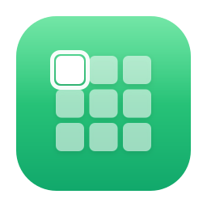
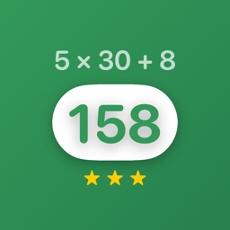

MarkdownPreview
A Quick Look extension that renders Markdown files in Finder — just press Space. GitHub-style output with syntax highlighting, math, and dark mode.
Small, focused apps for macOS & iOS by Julien Nicolas.
Fast, native, and built to disappear into your workflow.
A Quick Look extension that renders Markdown files in Finder — just press Space. GitHub-style output with syntax highlighting, math, and dark mode.
A Quick Look extension for .yml / .yaml files. Preview configuration and data files with clean syntax highlighting, right from Finder.
A menu-bar utility for safe, scan-first macOS cleanup. Review caches, logs, and Xcode & developer junk in a checklist — then reclaim the space. Nothing is removed without your confirmation.

A high-performance, cross-platform SwiftUI grid-navigation library with full keyboard support. For developers building grid-based interfaces.

A math puzzle game for iPhone and iPad — combine numbers and operators to hit the target. Quick, addictive mental-math workouts.
MarkdownPreview is a lightweight macOS Quick Look extension for previewing Markdown files.
Select any .md, .markdown, .mdown, or .mkd file in Finder and press
the Space bar — you’ll see a fully rendered preview with headings, tables, code blocks
(with syntax highlighting), math typesetting via KaTeX, and automatic light/dark mode.
It’s sandboxed, works entirely offline, and auto-updates through Sparkle.
The app is signed with a Developer ID and notarized by Apple — no Gatekeeper warnings.
YAMLPreview does the same for .yml and .yaml files — a format
macOS has no built-in preview for. It adds syntax highlighting and an optional line-number gutter,
using the same sandboxed, notarized architecture as MarkdownPreview.
Both are part of a small suite of free macOS & iOS tools by Julien Nicolas, built in Swift and SwiftUI. Also available: SweepBar (a menu-bar macOS cleanup utility), GridNavigation (a cross-platform SwiftUI grid-navigation library) and iDigits (a math puzzle game on the iOS App Store).